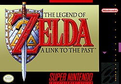

The Legend of Zelda: A Link to the Past

The Legend of Zelda: A Link to the Past is a 1991 action-adventure game developed and published by Nintendo for the Super Nintendo Entertainment System (SNES). It is the third game in The Legend of Zelda series, the story is set many years before the events of the first two Zelda games. The player assumes the role of Link as he journeys to save Hyrule, defeat the demon king Ganon, and rescue the descendants of the Seven Sages.